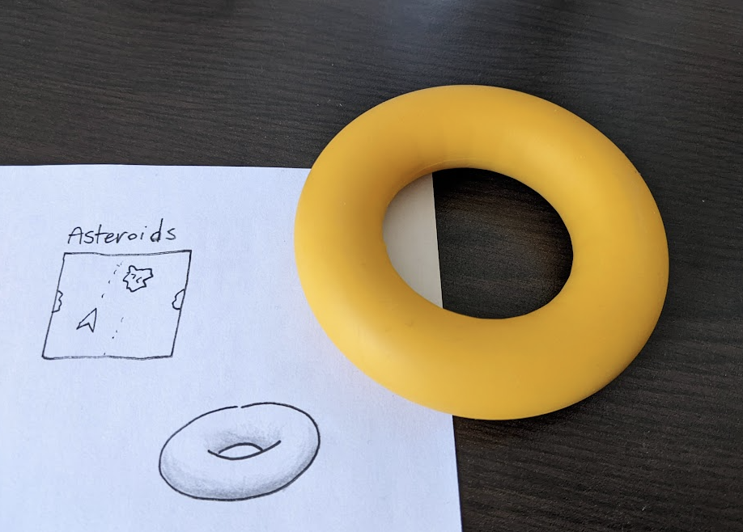
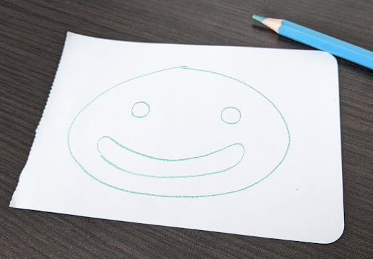
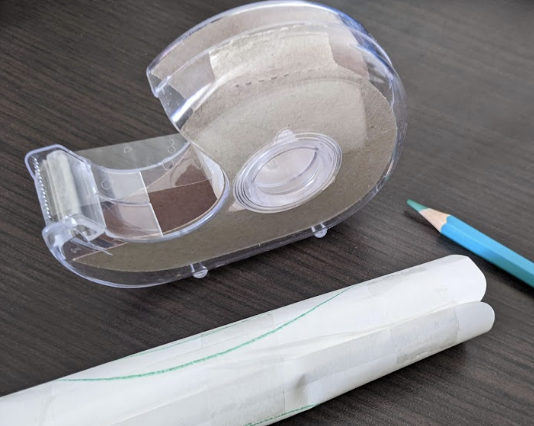
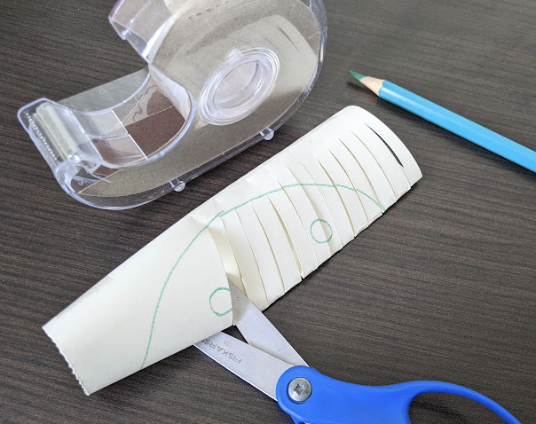
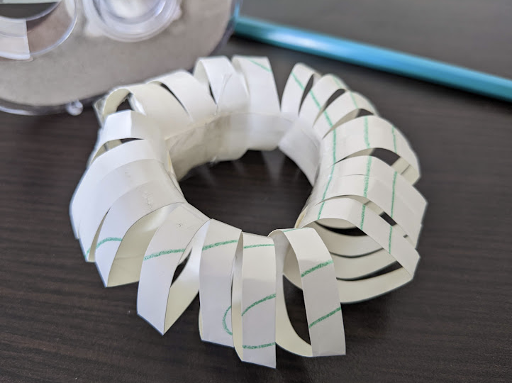
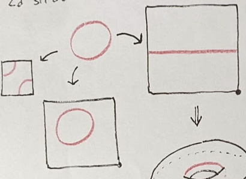
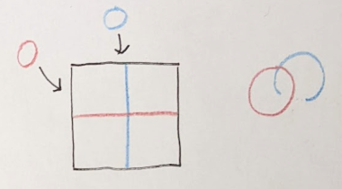

Have you ever heard that the game
asteroids
is played on a torus?
Objects wrap around the vertical edges and the horizontal of space in the
game.
Torus

You may have seen a torus drawn or described as a (hollow) donut.
A hollow donut shape is an example of a torus.
More generally though (from topology), any space that wraps around like a
torus, is a torus.
Let's investigate the relationship between the
space in asteroids and a donut.
Taping a Rectangle into a Torus
In school I learned how to take a flat "net", fold it up, and tape it into a
cube. You can do a similar, although a bit more tricky, craft to turn a flat
rectangle into a torus.




I looked up how to convert a paper rectangle into a paper torus. I found this
nice simple video tutorial
and followed it.
If you use this method, you have to cut the paper
a bit because paper is not very flexible. So you don't technically get a
torus, but if you imagine that the gaps are not there then its a torus.
Here's how mathematicians usually give instructions on how to tape (they
sometimes say glue) a rectangle to itself to get a torus.
The diagram says to tape the top edge to the bottom edge without
twisting the paper, and also to tape the left edge to the right edge without
twisting the paper.
In this section I tried to show that if you physically attach the parts of the
rectangle that wrap around to eachother in asteroids, you get a hollow donut
shape.
Thank you to Sharon for lending me
these scissors lol
Input Spaces
✕=
Please try playing around with these inputs.
This torus input is
connected in the same way as two circular inputs put beside eachother!
We
can learn this from topology: a torus is the cartesian product of two
circles.
A torus is 2D and circles are 1D. Two 1D circles make for a 2D torus.

Drawing on a torus represented as a rectangle that wraps around can give us a
new perspective. Here are some ways to draw a circle on a torus.
Oh snap, a new way to draw a circle just dropped! Draw a circle as a line that
wraps around a torus.
This isn't necessarily circle in the usual
geometric sense, but it does have constant curvature (like a usual cicle) and
is connected in the same way as a normal circle.

You can draw two circles that only intersect once on a torus! I don't think
you can do that on a normal piece of paper.
I wanted to write this article because I want to write and draw about some
other mathematical objects, and sometimes it is easier to draw things wrapping
around the edge.
Further Notes
There are other cool spaces you can get by gluing a rectangle in different
ways! Click on the gluing diagram (with the red and blue arrows labelled A
and B) to check them out.
If you have three circular inputs beside eachother, that's equivalent to a
3D-torus! Imagine a 3D space that wraps around vertically, horizontally,
and forward to backward!
A hollow donut torus is the boundary (∂) of solid 3D object called a solid
torus.
Let me know if you want to see illustrations or interactives of any of these
notes!
 In school I learned how to take a flat "net", fold it up, and tape it into a
cube. You can do a similar, although a bit more tricky, craft to turn a flat
rectangle into a torus.
In school I learned how to take a flat "net", fold it up, and tape it into a
cube. You can do a similar, although a bit more tricky, craft to turn a flat
rectangle into a torus.